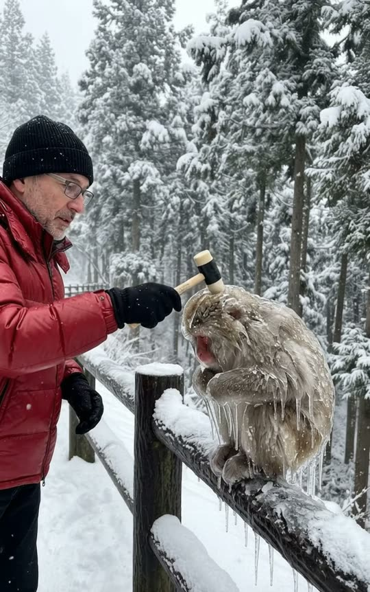
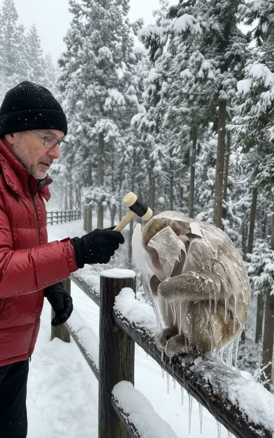
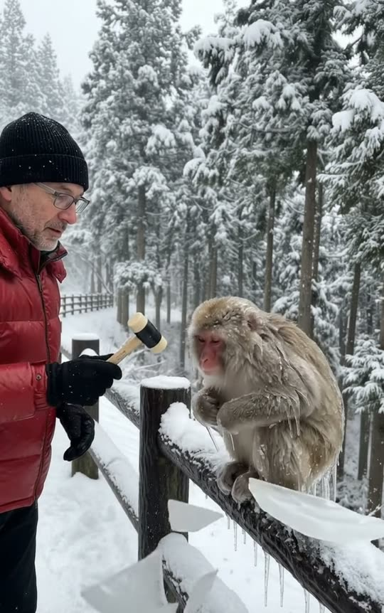
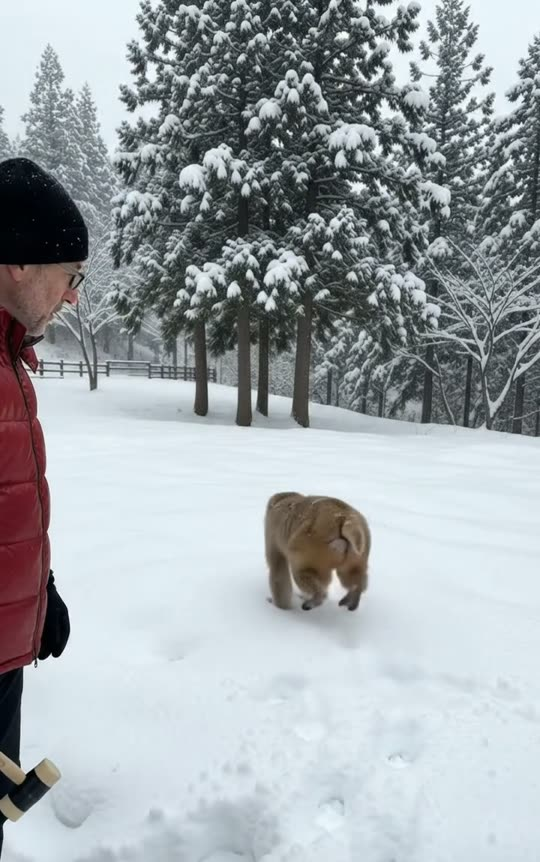

Free prompt pack
Frozen solid.Tapped free.
Nobody froze anything. One still image and one prompt that describes the shot second by second.
Two prompts, in the order I ran them. Copy them whole.
The first frame
The ice lives here. This image is frame one of the video. The man, the mallet, the fence and the frozen monkey all come from it, so everything the shot needs has to be in it already.
Watch out
If the ice doesn't show in the image, it won't show in the video either: it pops in out of nowhere right before it breaks. Check it before you move on.

The prompt 145 words
Smartphone photo of a snowy conifer forest on an overcast winter day, soft grey daylight. A dark wooden post-and-rail fence heaped with thick snow runs diagonally from the bottom left toward the trees on the right. At frame-left, side-on, stands a man in his fifties with rectangular glasses, short grey stubble, a plain black knit beanie, a glossy red down puffer jacket, black gloves and black trousers, resting a small rubber mallet on top of a monkey's head. The monkey, a Japanese snow monkey with a red face, sits hunched on the top rail, its whole body coated in a thick layer of clear, glossy ice that hugs every contour like a glass coating, with trapped bubbles and bright reflections of the sky, its fur dark and flattened beneath, long icicles hanging from its arms and belly onto the rail. Real phone photo, natural colour.
The take
Ten seconds, written second by second. Add the image from step 01 as the reference, set 10 s, 9:16, 720p and audio on, and paste the prompt whole.
- 0–1 stwo light taps on the head
- 1–4 severy tap cracks the ice a bit more
- 4–5 sthe ice turns white
- 5–6 sit falls away in pieces
- 6–10 sa shake, a jump, back to the forest
Watch out
Don't trim it. Every line closes a door the model would walk through: cuts, a second monkey, melting ice, a camera that follows.
Fragments



The prompt 1513 words
FORMAT Real smartphone footage, filmed standing in a snowy forest: the recorded video file itself, not the camera app screen. One continuous take in real time, no cuts. Vertical frame. The video runs at 24 fps. No frame is repeated. Real time, 1x speed, never slow motion. SCENE A monkey frozen solid inside a thick coating of ice sits on a snowy fence rail. A man gently taps the ice with a small mallet; every tap cracks it a little more, until the whole coating splits and falls away in pieces. The monkey underneath is fine: it shakes its fluffy fur, jumps off the rail and runs away across the snow into the forest. The man is already tapping the ice in the first frame. The take ends with the monkey small between the trees, its pawprints in the snow, and the man watching it go. EXACTLY ONE MAN AND ONE MONKEY. REFERENCE IMAGE Use it for the man, his clothes, the mallet, the monkey, the ice on the monkey, the fence, the forest and the light. The man, the monkey and its ice match it exactly from the first frame, zero drift, no smoothing. The action is described below. THE MAN A man in his fifties with rectangular glasses, short grey stubble, a plain black knit beanie, a glossy red down puffer jacket, black gloves, black trousers and black snow boots. In his right hand, the small mallet from the reference image. THE MONKEY One adult Japanese snow monkey, about ten kilograms, with a bright red face and red hands. From the first frame it is coated in a thick layer of clear, glossy ice that hugs every contour of its head, arms and back like a glass coating, about two centimetres thick, with trapped air bubbles and bright reflections of the grey sky on its curved surface; its fur under the ice is dark and flattened; long icicles hang from the ice at its arms and belly down onto the rail. The ice is already there, exactly as in the reference image, in the very first frame: it never appears, never grows, never thickens and never turns into a dome or a bubble during the take; it only cracks and comes off. Under the ice its fur is dry, thick and golden-brown. The same monkey from the first frame to the last: same size, same red face. LOCATION MAP Our phone is held by someone standing in the snow, who is never seen, at chest height, two and a half metres from the man. A dark wooden post-and-rail fence, two rails, square posts, a thick layer of snow on top, runs diagonally from the bottom-left corner of the frame toward the trees at frame-right. Frame-left: the man, side-on, facing frame-right, from his beanie to his knees, on our side of the fence. Middle of the frame: the monkey, sitting on the top rail between two posts, half a metre in front of the man's chest. Beyond the fence: a flat snowfield, then tall conifers bowed under heavy snow, eight to fifteen metres away. FIRST FRAME Already moving: the man at x 0-35%, the head of his mallet touching the glossy ice on top of the monkey's head; the ice-coated monkey hunched on the top rail at x 45-75%, the ice shining over its whole body, its icicles hanging down onto the snow-covered rail; snowy conifers behind. Instant read: a monkey frozen in ice, and a man tapping it free. No delayed reveal. OPTICS Main phone lens, wide, deep focus from the man to the trees. The framing stays the same for the whole take. CAMERA Handheld by the person filming, standing still: almost still, a faint tremor. It never pans, never tilts down to the snow, never follows the monkey, never zooms, never walks, never cuts. The man stays in the left third of the frame, and the same snow-capped fence post stands at the bottom-left of the frame in the first second and in the last second. ACTION TIMING 0–1.0 s — The mallet taps the ice on top of the monkey's head twice, small and gentle; a white star-shaped mark appears in the ice where it hits. 1.0–4.0 s — He works his way down with one light tap every half-second: its forehead, its cheek, its chest, its shoulder. The mallet always lands on the ice, never on bare fur. Every tap leaves a white star mark and a thin crack that runs out from it; by 4 s the cracks web across the whole coating. Inside, the monkey does not move; at 3 s its eyes blink once behind the ice. 4.0–5.0 s — One firmer tap on the chest: the same coating of ice turns milky white with fine crazing in a fraction of a second, and a crack runs from the top of its head down to its belly. 5.0–6.0 s — The coating splits and comes off in six thick, rigid pieces that keep the curved shape of its head, back and arms, like pieces of a broken glass mould: they slide down its sides and drop onto the rail and into the snow, shattering into chunks with sharp edges; the icicles snap off and fall. A little glittering ice dust drifts down and is gone within a second. Underneath, the monkey's fur is dry, fluffy and golden-brown. 6.0–7.3 s — The monkey shakes its whole body like a wet dog, its fur puffing out, blinks, looks up at the man, then turns and walks along the rail toward frame-right. 7.3–8.3 s — It jumps down off the far side of the rail onto the snowfield, sinking to its belly in the snow. 8.3–10 s — It bounds away across the snowfield toward the trees, leaving a trail of deep pawprints, getting smaller, about eight metres away by the last frame. The man lowers the mallet and watches it go. The take ends on the monkey small between the trees. PHYSICS AND SCALE The ice is hard, heavy and brittle: it never bends, never folds, never flutters like plastic film, never melts, never turns to liquid and never explodes into powder; it cracks, crazes white and breaks into thick, clear, rigid pieces with trapped bubbles, and those pieces drop straight down, thump onto the rail and the snow and shatter. The taps are small and gentle, the mallet moves no more than ten centimetres; he never swings hard. The monkey is the size of a small dog next to the man, its head level with his chest. Freed, it moves like a real monkey: quick hops, four limbs, its fur moving with each hop; in the snowfield its legs sink and throw up small sprays of snow. The fence, the trees and the man's feet stay where they are. Nothing morphs; the man and the monkey stay the same. LIGHTING Overcast winter daylight: soft grey light from the whole sky, no sun, no hard shadows. The snow is bright white but keeps its texture; the ice on the monkey catches bright reflections of the sky; the red jacket and the monkey's red face are the strongest colours in the frame. AUDIO No music, no score, no narration, no subtitles. Phone microphone outdoors in the snow: a soft wind in the trees, the dull tok of the mallet on the ice with each tap, small crackles as the cracks spread, then a sharp splitting crack at 4.5 s, the heavy thumps of the ice pieces landing in the snow and the tinkling of small chunks, the monkey's short high chirp as it shakes, the crunch and puff of its paws in the snow as it runs. Nobody speaks. LOOK Real smartphone footage, seen as the saved video file: deep depth of field like a small phone sensor, no cinematic bokeh, slight over-sharpening, a little noise in the dark trees. Framing is amateur: the horizon a few degrees off level. No camera app interface: no shutter button, no gallery thumbnail, no icons, no buttons, no recording dot, no frame lines. No colour grade, no teal-and-orange, no film grain, no lens flare, no slow motion, no cuts. The monkey is a photoreal living animal. NO FULL-FRAME EVENTS The ice dust stays small and close to the monkey and is gone within a second; the man, the monkey and the fence are visible at every moment. No snow cloud, no flash, no fade, no blur used as a transition. POSITIVE LOCKS Exactly one man and one monkey, the same in every frame. The ice on the monkey is the same from the first frame until it cracks; it breaks only once and never forms again. The camera stays where it is, with the same framing from the first frame to the last. No captions, no subtitles, no on-screen text, no watermark, no logos, no interface, no letters anywhere, including on the beanie and the jacket. ONE PHONE. ONE MAN. ONE FROZEN MONKEY. ICE FROM THE FIRST FRAME. IT BREAKS ONCE. NO CUTS. NO PAN. NO SLOW MOTION. NO MUSIC.
No ice in your image?
Fix the image, not the video. The video copies the image. If the monkey comes out frosty instead of frozen, edit the image with this and run it again until the ice is obvious.
The prompt 120 words
Edit this photo. Keep the man, the mallet, the fence, the forest and the light exactly as they are. Change only the monkey: its whole body, head included, is now coated in a thick layer of clear, glossy ice that hugs every contour of its head, arms and back like a glass coating, about two centimetres thick, with small trapped air bubbles and bright reflections of the grey sky on its curved surface. Its fur under the ice is dark and flattened, its red face is visible through the ice, and long icicles hang from the ice at its arms and belly down onto the rail. The head of the mallet rests on the ice on top of its head.
Rule 01
Ice in frame one
Whatever breaks in the video has to be in the image from the start, or the model makes it appear right before it breaks.
Rule 02
Coating, not shell
"Shell" gets you a glass dome around the monkey. Describe ice that hugs its head, arms and back.
Rule 03
No camera buttons
If the camera app's shutter button shows up, say it's the recorded video file, not the app screen.
That's the whole build
Now go freezesomething.
If yours works, send it over. I read every DM and the good ones end up on the account.
@martiiifons